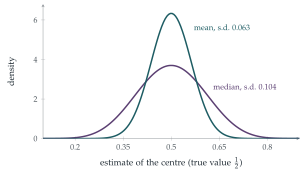

STEP II 2000, Question 14
Read the question before you go on. It is in the STEP Support Programme’s question database: step.maths.org/questions/00-s2-q14
The hook
To estimate the centre of a set of measurements, you could take the mean or the median. Which is better? The answer depends on the data. For measurements with occasional wild errors, the median is far more reliable: one absurd value can drag the mean anywhere, but barely moves the median. For well-behaved data, the mean usually wins. This question measures how much it wins by, for uniformly distributed data: the median’s variance is three times as large, so you would need three times as many observations to make the median as precise as the mean.
The comparison introduces efficiency, one of the main ideas in choosing statistical methods, and the beta integral, which also appeared in Section 4.4.
Before you start
Why is the density of the median proportional to \(y^n(1 - y)^n\)? (For \(Y\) to be near \(y\), how many of the \(2n + 1\) values must be below \(y\), and how many above?)
For the median to be at \(y\), one value must be at \(y\), \(n\) values below (each with probability \(y\)) and \(n\) above (each with probability \(1 - y\)). That gives the factor \(y^n(1 - y)^n\); the constant counts the ways of choosing which values are which.
Working it through
Stage 1 The constant
The density must integrate to \(1\): \[k\int_0^1y^n(1 - y)^n\,\mathrm{d}y = k\cdot\frac{n!\,n!}{(2n + 1)!} = 1, \qquad k = \frac{(2n + 1)!}{(n!)^2}. \qed\]
Stage 2 Mean and variance
The density is symmetric about \(\frac12\) (replace \(y\) by \(1 - y\)), so \(\mathrm{E}(Y) = \frac12\).
Compute \(\mathrm{E}(Y^2) = k\int_0^1y^{n+2}(1 - y)^n\,\mathrm{d}y\) using the beta integral, and simplify the factorials.
\[\mathrm{E}(Y^2) = \frac{(2n + 1)!}{(n!)^2}\cdot\frac{(n + 2)!\,n!}{(2n + 3)!} = \frac{(n + 2)(n + 1)}{(2n + 3)(2n + 2)} = \frac{n + 2}{2(2n + 3)}.\] So \[\mathrm{Var}(Y) = \frac{n + 2}{2(2n + 3)} - \frac14 = \frac{2(n + 2) - (2n + 3)}{4(2n + 3)} = \frac{1}{4(2n + 3)}. \qed\]
Stage 3 Comparing with the mean
What are the mean and variance of \(\bar X\), the average of \(2n + 1\) independent uniform variables?
Each \(X_i\) has mean \(\frac12\) and variance \(\frac{1}{12}\), so \(\mathrm{E}(\bar X) = \frac12\) and \(\mathrm{Var}(\bar X) = \frac{1}{12(2n + 1)}\). For large \(n\), \[\mathrm{Var}(Y) \approx \frac{1}{8n}, \qquad \mathrm{Var}(\bar X) \approx \frac{1}{24n}.\]
If \(Y\) and \(\bar X\) are normal with mean \(\frac12\) and standard deviations \(\sigma_Y\) and \(\sigma_{\bar X}\), write both probabilities in terms of the standard normal distribution function \(\Phi\).
\(\mathrm{P}\bigl(|Y - \frac12| < \frac{d}{\sqrt n}\bigr) = 2\Phi\bigl(\frac{d}{\sqrt n\,\sigma_Y}\bigr) - 1\), and \(\sqrt n\,\sigma_Y \to \frac{1}{\sqrt8}\); similarly for \(\bar X\) with \(\sqrt n\,\sigma_{\bar X} \to \frac{1}{\sqrt{24}}\). So the probabilities tend to \(2\Phi(d\sqrt8) - 1\) and \(2\Phi(d\sqrt{24}) - 1\). Since \(\Phi\) is increasing and \(\sqrt{24} > \sqrt8\), the second is larger, and so the inequality holds for all sufficiently large \(n\).■ The mean is more likely to be close to the true centre.

Looking back
The beta integral. \(\int_0^1y^r(1 - y)^s\,\mathrm{d}y\) gave the normalising constant and the moments in one formula.
Symmetry gave the mean. No integration was needed for \(\mathrm{E}(Y)\).
Compare spreads on the right scale. Multiplying standard deviations by \(\sqrt n\) made the comparison independent of \(n\).
What’s really going on
Efficiency
The relative efficiency of two unbiased estimators is the ratio of their variances; it says how many times as many observations one needs to match the other. For uniform data the median has efficiency \(\frac13\) relative to the mean. For normal data it is \(\frac2\pi \approx 0.64\): the median needs about \(57\%\) more observations. But for heavy-tailed data the tables turn. For the Cauchy distribution (Section 12.22) the mean is useless, since the average of \(n\) observations is no better than one, while the median works well. For the Laplace distribution (Section 12.24) the median is twice as efficient as the mean.
Robust statistics
The median is robust: you can change almost half the data to arbitrary values without moving it far. The mean has no such protection: one wrong value can spoil it. In the 1960s and 1970s John Tukey, Peter Huber and others developed robust statistics, estimators that are nearly as efficient as the mean for clean data but resistant to outliers, such as the trimmed mean (discard the largest and smallest \(10\%\) and average the rest), which is used in judging sports like diving and gymnastics.
Laplace showed in 1774 that if errors follow the double exponential (Laplace) distribution, the best estimate of the true value is the median; Gauss showed in 1809 that if they follow the normal distribution, the best estimate is the mean, which led him to the method of least squares. Which is right depends on how errors behave, a question that statisticians still debate for each new kind of data.
The thinking skill
Two methods may both be right on average; compare how much their answers vary, and how quickly that variation shrinks with more data.
At university, asymptotic efficiency, the comparison of variances for large samples, is a standard tool for choosing between statistical methods, together with robustness for when the model might be wrong.
Try this next
The median’s density. Derive the density \(\frac{(2n + 1)!}{(n!)^2}y^n(1 - y)^n\) by counting: one value in \([y, y + \delta y]\), \(n\) below and \(n\) above.
Three observations. For \(n = 1\) (three uniform observations), find \(\mathrm{Var}(Y)\) and \(\mathrm{Var}(\bar X)\) exactly. Which is smaller?
The midrange. Another estimator of the centre is the midrange \(\frac12(\max + \min)\). Show that for uniform data its variance is \(\frac{1}{2(m + 1)(m + 2)}\) with \(m = 2n + 1\) observations. How does it compare with the mean? (Compare Section 13.3.)
An outlier. Eleven measurements are \(9.8\), \(9.9\), \(10.0\), \(10.0\), \(10.1\), \(10.1\), \(10.2\), \(10.2\), \(10.3\), \(10.4\) and \(104\) (a typing error). Compare the mean and median.
Further reading
John Rice, Mathematical Statistics and Data Analysis (Duxbury), on order statistics and efficiency.
Rand Wilcox, Fundamentals of Modern Statistical Methods (Springer). Why robust methods matter, for non-specialists.
Stephen Stigler, The Seven Pillars of Statistical Wisdom (Harvard University Press). Aggregation, the mean and the median, in historical perspective.